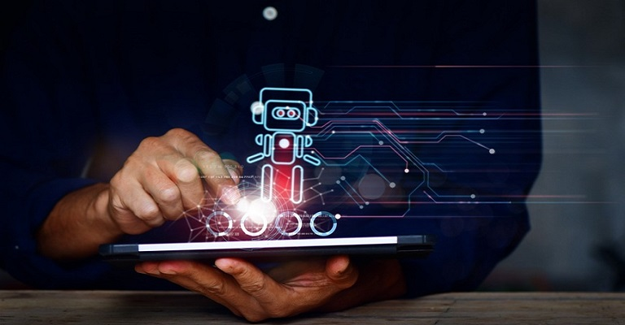

São inúmeras as formas de uso e aplicabilidade nos contextos de negócios das empresas.Muito tem-se falado sobre o ChatGPT desde que foi lançado, em novembro de 2022, pela OpenAI - um grande laboratório de pesquisa em inteligência artificial e que vem movimentando muitas discussões sobre o uso da Inteligência Artificial na potencialização dos negócios nesse “boom” da transformação digital. O ChatGPT, para quem ainda não está totalmente familiarizado com o termo, é uma ferramenta de chatbot baseada na tecnologia GPT “Generative Pre-Trained Transformer”, que é um modelo de aprendizado de máquina projetado para interagir de maneira conversacional. Isso de maneira bem mais avançada do que os tradicionais chatbots, permitindo uma alta escalabilidade do modelo de aprendizado. Com todo esse advento, gostaria de trazer aqui alguns pontos importantes que venho observando ao ler bastante sobre o assunto e sobretudo a partir de inúmeros testes e interações que tenho tido com o uso da ferramenta.
